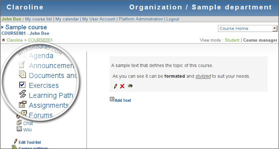

Claroline es un Proyecto de Software Libre distribuido bajo la licencia GNU/GPL (GNU General PublicLicense)
y se encuentra desarrollado íntegramente por el Lenguaje de Programación Web PHP, utiliza como Sistema de
Gestión de Base de Datos (SGBD) el conocido servidor MySQL.

El sistema Claroline en principio fue pensado
para la plataforma Libre GNU/Linux, pero debido a que el sistema es accesible a través de un Browser o
Navegador Web está disponible como un sistema multiplataforma, es decir es posible instalarlo y configurarlo
bajo cualquier sistema operativo.